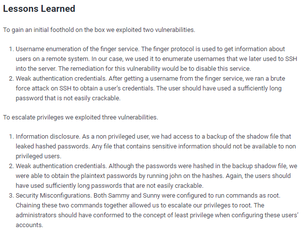

Index
lessons learned
Check out Rana Khalil's OSCP writeups and prep at https://rana-khalil.gitbook.io/hack-the-box-oscp-preparation/
1. Fun box where you enumerate users on finger service the box runs, find it has an ssh port on an uncommon port
2. from there you get sunny user by either guessing their password or using an ssh brute force prorgram like protator
3. you hop on sunny and see it can run a file called /root/troll as root without a sudo password and that there is a backup log with an old /etc/shadow list
4. you can brute force user sammy's hash from the old /etc/shadow list using hashcat
5. from there you notice sammy can run wget as root without a password so there are two main ways I showed how to priv esc utilizing sunny/sammy to rewrite /troll/root OR you can reupload /etc/shadow to the box with sammy from your attacking machine and log into root with a known password